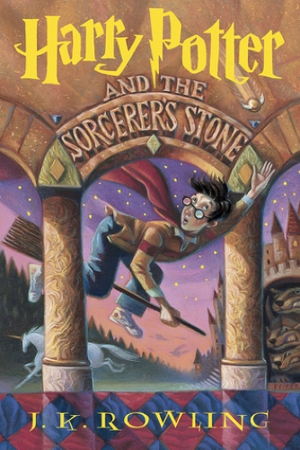
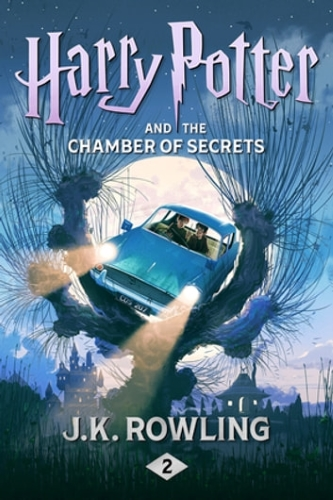
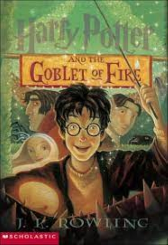
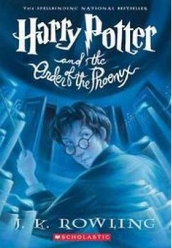
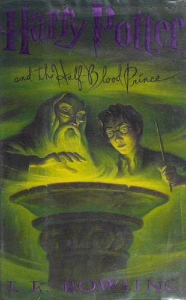
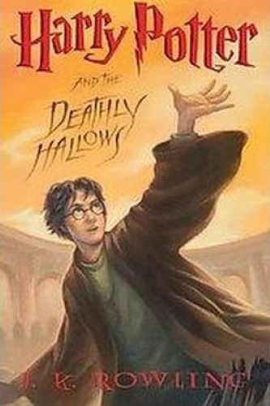

Here is the list of the books about Harry Potter:
-
Harry Potter and the Sorcerer’s Stone (1997)
The book is about 11 year old Harry Potter, who receives a letter saying that he is invited to attend Hogwarts, school of witchcraft and wizardry. He then learns that a powerful wizard and his minions are after the sorcerer's stone that will make this evil wizard immortal and undefeatable.
⤒ To the contents -
Harry Potter and the Chamber of Secrets (1998)
The plot follows Harry's second year at Hogwarts School of Witchcraft and Wizardry, during which a series of messages on the walls of the school's corridors warn that the "Chamber of Secrets" has been opened and that the "heir of Slytherin" would kill all pupils who do not come from all-magical families.
⤒ To the contents -
Harry Potter and the Prisoner of Azkaban (1999)

The third school year is different as Dementors, wraithlike dark creatures, are roaming around Hogwarts to prevent Black from entering. A new Defense against the Dark Arts teacher named Lupin helps Harry defend himself as Harry passes out when Dementors are around him.
⤒ To the contents -
Harry Potter and the Goblet of Fire (2000)
It follows Harry Potter, a wizard in his fourth year at Hogwarts School of Witchcraft and Wizardry, and the mystery surrounding the entry of Harry's name into the Triwizard Tournament, in which he is forced to compete.
⤒ To the contents -
Harry Potter and the Order of the Phoenix (2003)
It follows Harry Potter's struggles through his fifth year at Hogwarts School of Witchcraft and Wizardry, including the surreptitious return of the antagonist Lord Voldemort, O.W.L. exams, and an obstructive Ministry of Magic.
⤒ To the contents -
Harry Potter and the Half-Blood Prince (2005)
In this book, Harry Potter learns a lot about Lord Voldemort's past, and Harry Potter prepares for the final battle against his nemesis with the help of Headmaster Dumbledore. But in that time, Voldemort returns to power, and makes a plan to destroy Harry.
⤒ To the contents -
Harry Potter and the Deathly Hallows (2007)
While villainous Lord Voldemort begins taking over the Ministry of Magic, Harry, Ron and Hermione must race against time to finish Dumbledore's quest to find and destroy Voldemort's Horcruxes in order to stop the Dark Lord once and for all.
⤒ To the contents